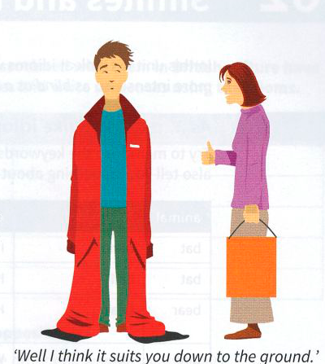

Bài tập
61.1 Hoàn thành các thành ngữ sau với các giới từ.
- The Minister cleverly cut the ground her opponents’ feet by announcing new tax cuts. (Bộ trưởng đã khéo léo làm suy yếu vị thế của các đối thủ bằng cách công bố cắt giảm thuế mới.)
- He got the ground floor with e-commerce and became a millionaire when it took off. (Anh ấy đã tham gia ngay từ đầu với thương mại điện tử và trở thành triệu phú khi nó khởi sắc.)
- Good hotels are thin the ground in the smaller cities; you have to go to the capital to get hotels of international standard. (Những khách sạn tốt rất hiếm ở các thành phố nhỏ hơn; bạn phải đến thủ đô mới có được các khách sạn đạt tiêu chuẩn quốc tế.)
- The project has got the ground quicker and more smoothly than we expected. (Dự án đã được triển khai nhanh chóng và suôn sẻ hơn chúng tôi mong đợi.)
- Part-time work suits me the ground at the moment as I’m trying to study at the same time. (Công việc bán thời gian hoàn toàn phù hợp với tôi vào lúc này vì tôi đang cố gắng học cùng một lúc.)

61.2 Sử dụng các thành ngữ ở bài tập 61.1 để viết lại các câu sau. Thực hiện bất kỳ thay đổi cần thiết nào khác.
- I’m afraid there aren’t many good cafés in the town centre. (Tôi e rằng không có nhiều quán cà phê ngon ở trung tâm thị trấn.)
- Working from home is perfect for me as I can look after our small child at the same time. (Làm việc tại nhà là hoàn hảo đối với tôi vì tôi có thể đồng thời chăm sóc đứa con nhỏ của chúng tôi.)
- If you join our company now, I promise you are coming into it at the beginning of some really exciting developments. (Nếu bạn gia nhập công ty của chúng tôi bây giờ, tôi hứa bạn sẽ tham gia vào giai đoạn đầu của một số bước phát triển thực sự thú vị.)
- Reducing the price now will enable us to get a big advantage over our competitors, because they will not be able to do the same. (Cắt giảm giá bây giờ sẽ cho phép chúng ta giành được lợi thế lớn so với các đối thủ cạnh tranh, bởi vì họ sẽ không thể làm điều tương tự.)
- It’s a good idea, but I don’t know if it will ever become popular. (Đó là một ý tưởng hay, nhưng tôi không biết liệu nó có bao giờ trở nên phổ biến hay không.)
61.3 Viết lại mỗi câu sau bằng một thành ngữ có nghĩa trái ngược với các từ được gạch chân.
- She let them persuade her and had a meeting with the boss to tell her everything. (Cô ấy đã để họ thuyết phục mình và có một cuộc gặp với sếp để kể cho bà ấy nghe mọi chuyện.)
- We have no ideas or experiences we can share, so we need to discuss how we can work together. (Chúng ta không có ý tưởng hoặc kinh nghiệm chung nào có thể chia sẻ, vì vậy chúng ta cần thảo luận về cách có thể hợp tác với nhau.)
- I think you can quite safely raise the subject of longer holidays at the staff meeting. (Tôi nghĩ bạn có thể đề cập đến chủ đề về kỳ nghỉ dài hơn tại cuộc họp nhân viên một cách khá an toàn.)
- There are very few English Language schools in the capital city. (Có rất ít trường Anh ngữ ở thành phố thủ đô.)
- The idea that public transport is better for the environment is becoming less popular. (Quan điểm cho rằng phương tiện giao thông công cộng tốt hơn cho môi trường đang trở nên kém phổ biến hơn.)
61.4 Trả lời các câu hỏi sau.
- If a famous person goes to ground, what do they do? (Nếu một người nổi tiếng goes to ground (lánh mặt/ẩn mình), họ sẽ làm gì?)
- How do you feel if you wish the ground would swallow you up? (Bạn cảm thấy thế nào nếu bạn wish the ground would swallow you up (ước có lỗ nẻ chui xuống)?)
- If someone refuses to give ground, what do they refuse to do? (Nếu ai đó từ chối give ground (nhượng bộ), họ từ chối làm điều gì?)
- Which idiom in this unit means changing your position in an argument? (Thành ngữ nào trong bài học này có nghĩa là thay đổi lập trường của bạn trong một cuộc tranh luận?)
- One idiom in this unit gives you a choice between stamping and stomping. What is it and what does it mean? (Một thành ngữ trong bài học này cho bạn sự lựa chọn giữa stamping và stomping. Đó là thành ngữ nào và nó có nghĩa là gì?)
- If you want to sell a new product in a new country and someone has prepared the ground for you, what does that mean? (Nếu bạn muốn bán một sản phẩm mới ở một quốc gia mới và có ai đó đã prepared the ground (chuẩn bị trước điều kiện/mở đường) cho bạn, điều đó có nghĩa là gì?)